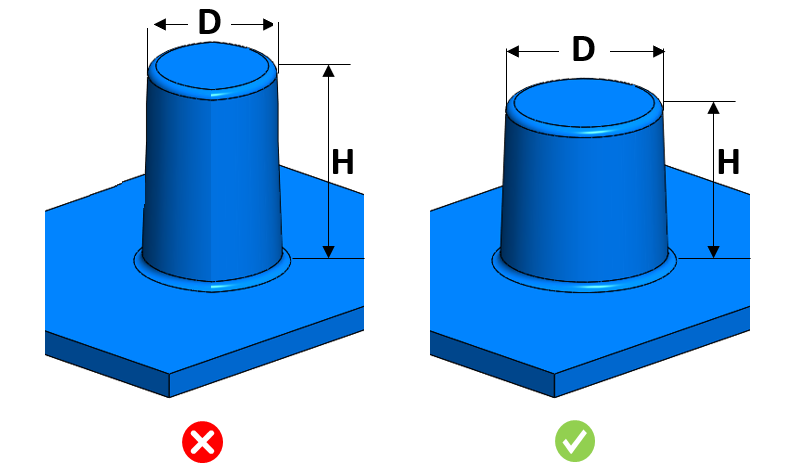

特定の高さに対するピン直径は、ユーザー指定の範囲内に維持する必要があります。
十分な強度を得るために、適切なピン直径と高さを維持する必要があります。
高すぎるピンは容易に曲がったり割れたりします。太くて高いピンは、ヒケ（sink marks）や充填不良などの問題を引き起こす可能性があります。
一般的なガイドラインとして、ピン高さが10 mmの場合、推奨ピン直径は0.5 mmとします。ただし、材料の種類によって変わる場合があります。
ユーザーは、表のMaterial（材料）について、ドロップダウンリストから材料を選択できます。このドロップダウンリストは、Materials Database に登録されているプラスチック材料を使用して生成されます。
DFMProの実行時に、ユーザーは入力選択（Input Selection）ダイアログボックスでパーツの材料を選択する必要があります。構成された「Material Group」の下で、ユーザーは任意の「Material Grade」を選択できます。

ここで、
D = ピン直径
H = ピン高さ
ユーザーは、Importボタンを使用して、Excelシートテンプレートに含まれる一括データをインポートできます。
標準テンプレート形式：
H1 |
H2 |
D1 |
D2 |
0 |
10 |
0.5 |
1.5 |
10 |
20 |
1.0 |
2.0 |
ここでは、
H1 = ピン高さ = 最小（超過）
H2 = ピン高さ = 最大（～まで、または含む）
D1 = ピン直径 = 最小（超過）
D2 = ピン直径 = 最大（～まで、または含む）